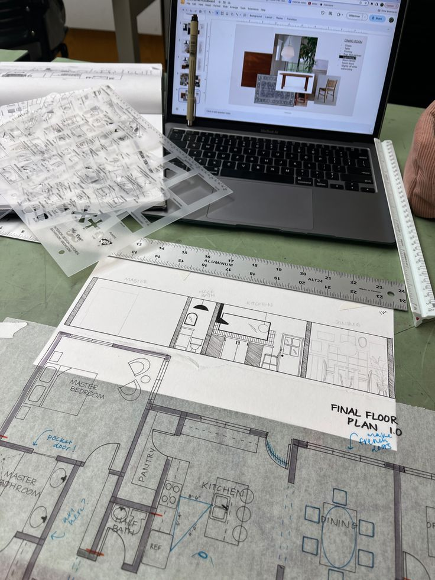
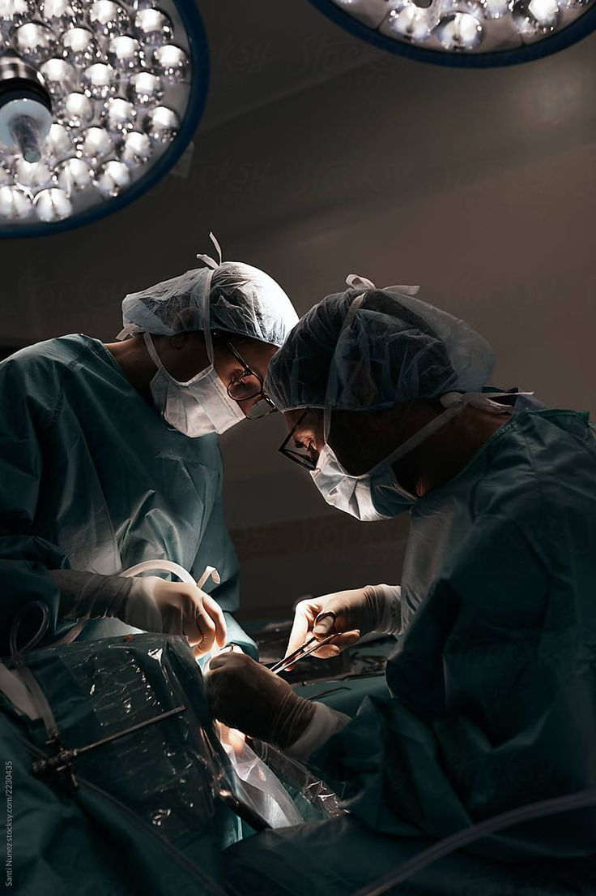
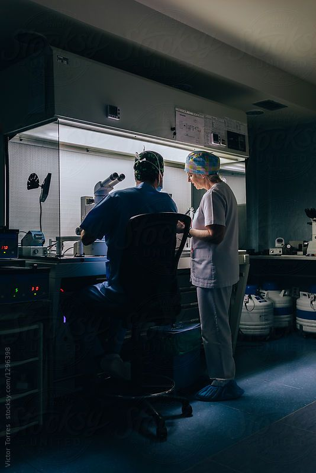
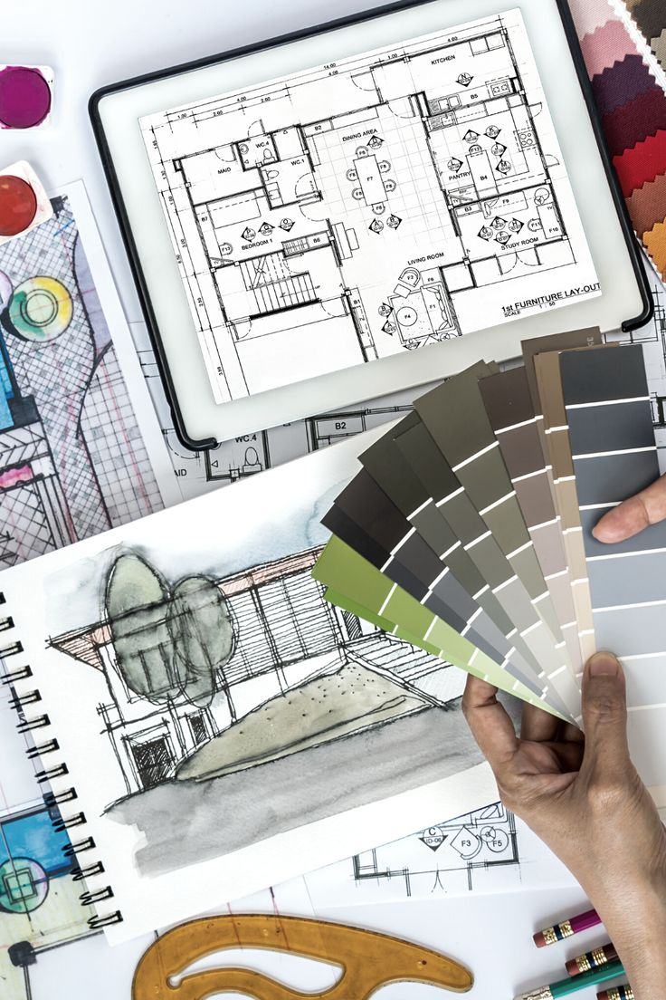

UNSW Sydney
Home
Programs
Services & Facilities
Faculty
Student Life
Unleash Your Potential: A Spectrum of Programs Tailored for Success.
Unravel the Tapestry of Learning: Explore, Engage, Excel with The University of New South Wales.

Built Environment
Business
Engineering
Law

Medicine

Science

Art and Design
Education
Undergraduate Programs:
Bachelor of Arts
Bachelor of Science
Bachelor of Commerce
Bachelor of Engineering (various specializations)
Bachelor of Built Environment
Bachelor of Fine Arts
Bachelor of Medicine, Bachelor of Surgery (MBBS)
Bachelor of Laws (LLB)
Bachelor of Education
Bachelor of Design
Postgraduate Programs:
Master of Business Administration (MBA)
Master of Science
Master of Engineering (various specializations)
Master of Architecture
Master of Professional Accounting
Master of International Public Health
Master of Finance
Master of Information Technology
Master of Laws (LLM)
Master of Education
Research Programs:
Master of Philosophy (MPhil)
Doctor of Philosophy (PhD)